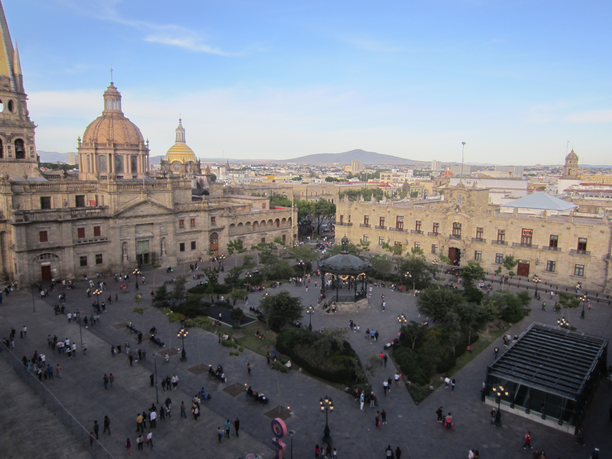

Introducción
La historia de Jalisco es extensa y muy importante para comprender el desarrollo del occidente de México.
Conocerla ayuda a entender por qué muchas tradiciones siguen siendo tan fuertes en la actualidad.
El pasado jalisciense está formado por la presencia de pueblos originarios, la etapa de conquista, el periodo colonial, la Independencia y el crecimiento moderno del estado. Cada una de estas etapas dejó huellas en su cultura, en su organización social y en su identidad.
🏹 Pueblos originarios
Antes de la llegada de los españoles, en el territorio de Jalisco vivían diversos grupos indígenas como los cocas, tecuexes, caxcanes, nahuas y huicholes o wixaritari.
Estos pueblos desarrollaron formas propias de organización, agricultura, creencias y trabajo comunitario. Muchas de sus costumbres y saberes todavía influyen en distintas regiones del estado.
Su presencia fue fundamental para la identidad del territorio, ya que dejaron conocimientos sobre el uso de la tierra, formas de intercambio y expresiones religiosas que continúan siendo valoradas.
⚔️ Conquista y colonización
Durante el siglo XVI, los españoles llegaron al occidente de México y comenzó el proceso de conquista.
Con la colonización se introdujeron nuevas formas de gobierno, religión y actividades económicas. También se fundaron asentamientos, templos y rutas comerciales que transformaron el territorio.
Este proceso no fue sencillo, ya que hubo resistencia por parte de varios pueblos originarios. Los cambios políticos y sociales modificaron profundamente la vida en la región.
🏢 Etapas importantes
Etapa colonial: Se construyeron ciudades, haciendas y centros religiosos que marcaron la organización de la región.
Independencia: Jalisco participó en los cambios políticos que dieron origen a un nuevo país.
Actualidad: Hoy el estado conserva su patrimonio histórico mientras se desarrolla en lo urbano, lo económico y lo cultural.
📅 Línea del tiempo
| Año o periodo | Hecho histórico | Importancia |
|---|---|---|
| Antes del siglo XVI | Presencia de pueblos originarios | Base cultural e histórica del territorio |
| 1529 | Llegada de expediciones españolas | Inicio del proceso de conquista |
| 1810 | Inicio de la Independencia de México | Transformación política del país |
| 1823 | Jalisco se reconoce como estado libre y soberano | Consolidación de su identidad política |
📸 Imágenes relacionadas
Plaza representativa de Jalisco

| 🏛️ Lugares importantes para la historia |
|---|
Centro histórico

|
Monumento de Jalisco

|
| 🔎 Dato histórico curioso | |
|---|---|
| 📌 | En Jalisco conviven huellas de pueblos originarios, construcciones coloniales y ciudades modernas. |
📖 Importancia de estudiar la historia
Estudiar la historia de Jalisco permite conocer el origen de muchas tradiciones actuales, entender cómo se formaron sus ciudades y valorar la diversidad cultural del estado.
Además, ayuda a relacionar el pasado con el presente, ya que muchas costumbres, edificios y celebraciones todavía reflejan procesos históricos muy antiguos.
🌐 Historia e identidad regional
La identidad de Jalisco se construyó a partir de muchos procesos históricos. Su importancia en el occidente del país, su participación en distintos cambios políticos y la fuerza de sus tradiciones hicieron que el estado adquiriera una personalidad muy reconocible.
Hoy en día, cuando se habla de mariachi, charrería, plazas tradicionales, centros históricos y fiestas populares, también se está hablando de una historia que sigue presente en la vida cotidiana.